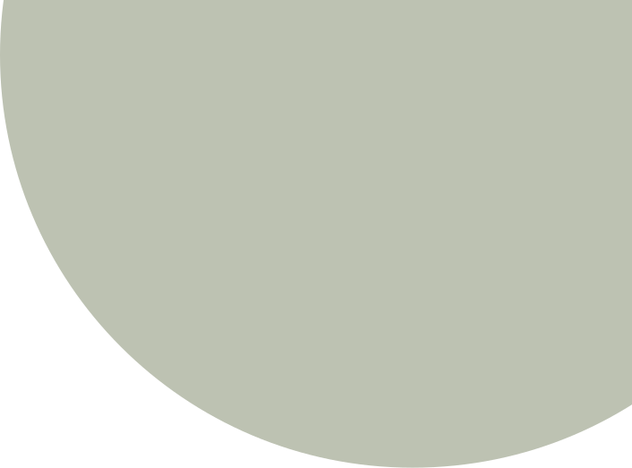
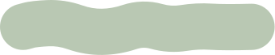
O valor
da sobra
Quando o descarte encontra destino, vira matéria-prima
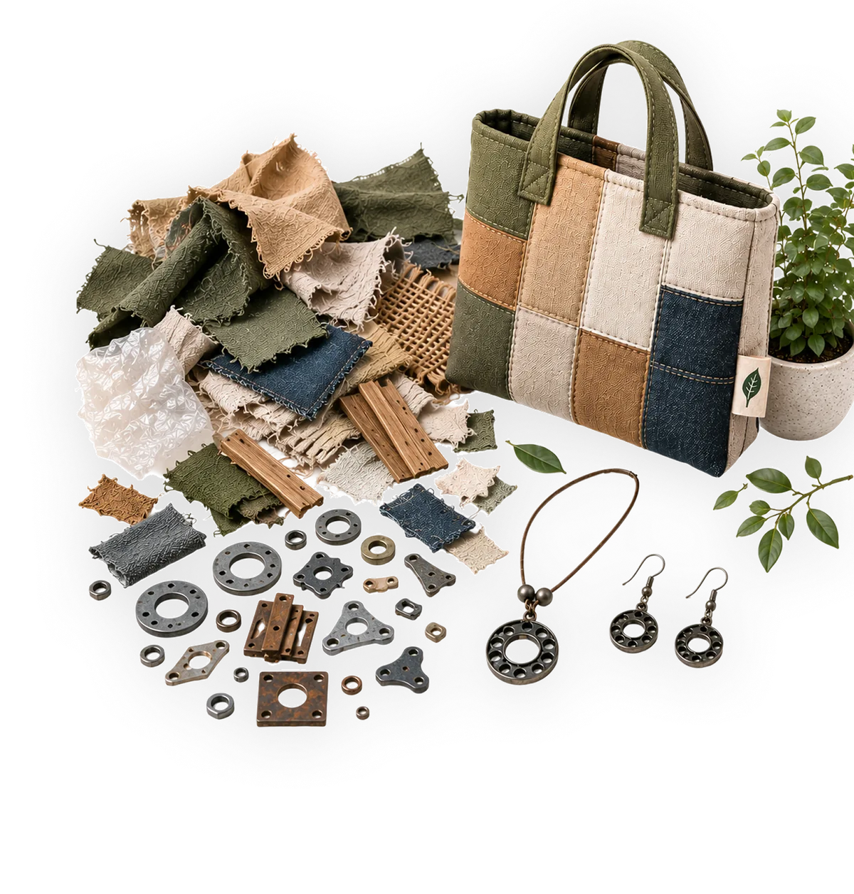
O Brasil em 2024 gerou cerca de mais de
81,6
milhões de toneladas de RSU
(Resíduos Sólidos Urbanos).
A região Nordeste contribui nesses índices com 24,7%, cerca de 20,2 milhões de toneladas.
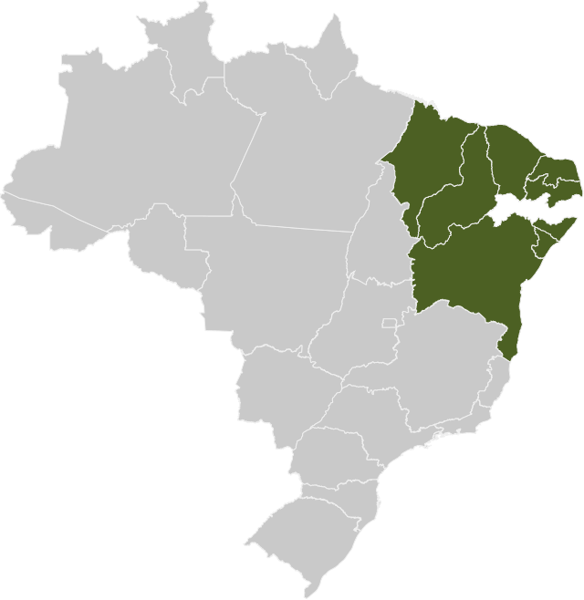
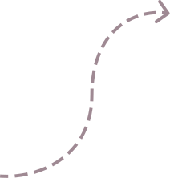
28,1 mi de toneladas
foram para disposição final inadequada no país (40,3% do que foi coletado e enviado para áreas de disposição final)
Somando a coleta informal de RSU à quantidade destinada à reciclagem a partir das unidades de triagem, o total de material enviado à reciclagem em 2024 foi de
7.117.851 toneladas
10,3 milhões de toneladas
foram para disposição final inadequada no Nordeste
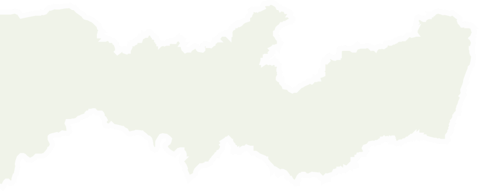
Recife já tem estrutura.
O desafio é fazer o material circular melhor
Os dados locais mostram que a cidade já possui rede de coleta seletiva e apoio à reciclagem, mas ainda há muito material com potencial de reaproveitamento fora desse circuito.
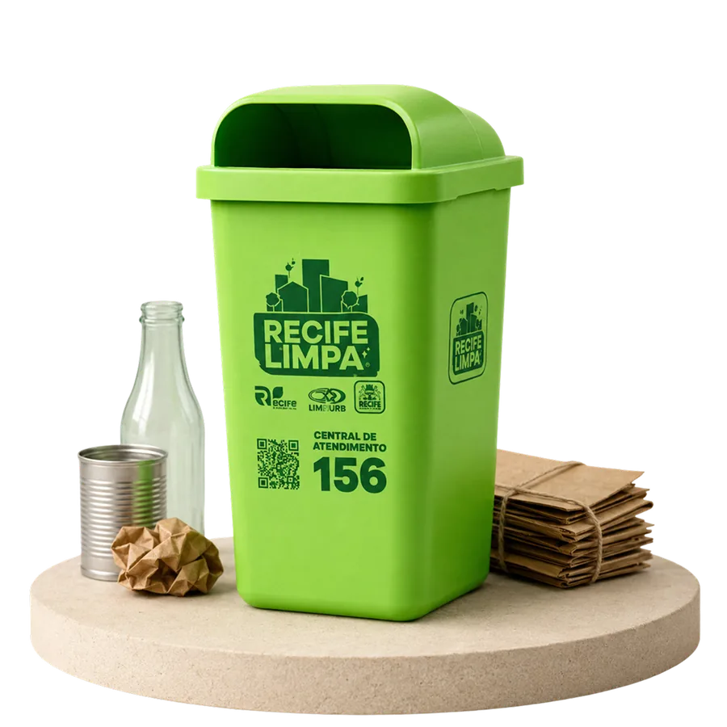
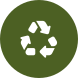
31,59%
dos resíduos sólidos são passíveis de reciclagem
4 mil t/ano
de recicláveis recolhidos (330t/mês)
11
cooperativas parceiras da rede municipal
+150
PEVs (Pontos de Entrega Voluntária)
17
Ecoestações na cidade do Recife
70%
da cidade coberta por rotas de coleta seletiva
RECIFE EM FOCO:
R$ 300mi
para investir em economia circular
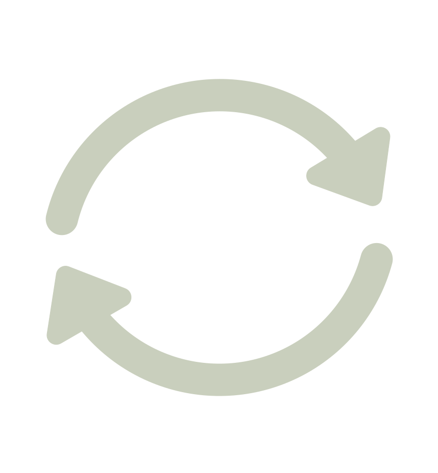
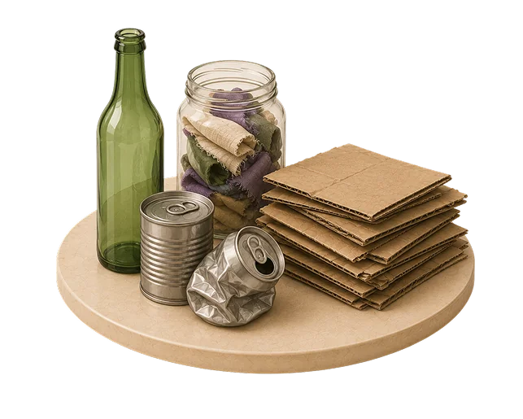
Coleta
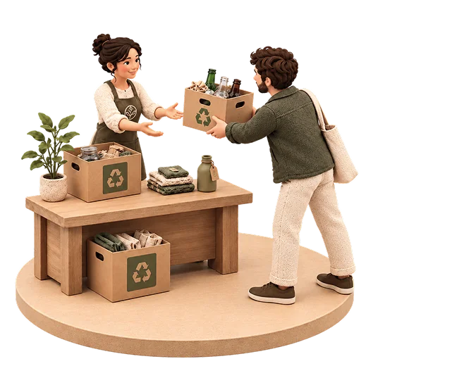
Triagem
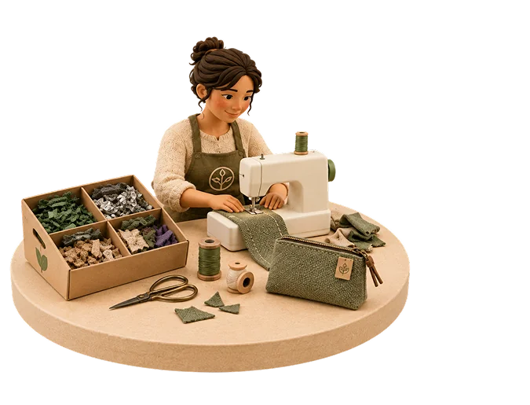
Transformação
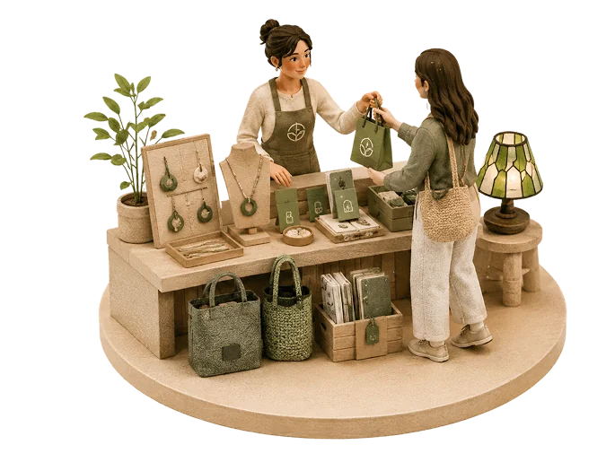
Novo produto
O quilo do plástico comum, que antes era vendido cru por R$ 1,80, passa a valer até R$ 100,00 quando comercializado na forma de produtos finais
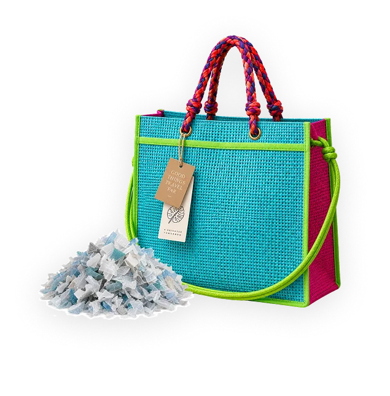
Conectando quem descarta
com quem transforma
A transformação já existe. O que falta é conexão.
O pequeno produtor criativo tem repertório, técnica e interesse em reaproveitar materiais. O desafio não é apenas produzir — é acessar sobras com constância, saber o que está disponível e encontrar um caminho confiável entre quem descarta e quem transforma.
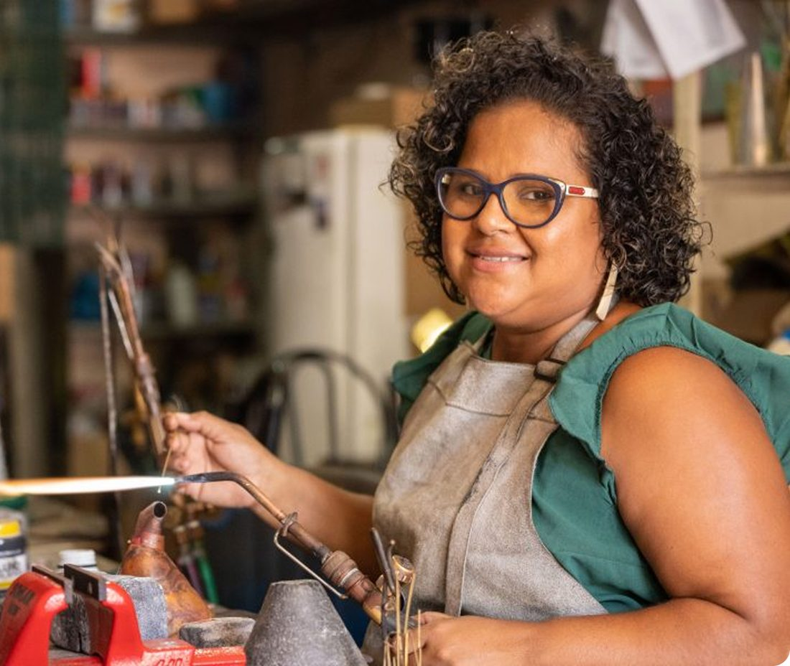
O que o artesão precisa para transformar:
Saber onde encontrar materiais disponíveis
Ter acesso fácil e contínuo a esses materiais
Dados sobre qualidade e quantidade disponível
Conexão com cooperativas e pequenos geradores
Oportunidades para vender e gerar renda
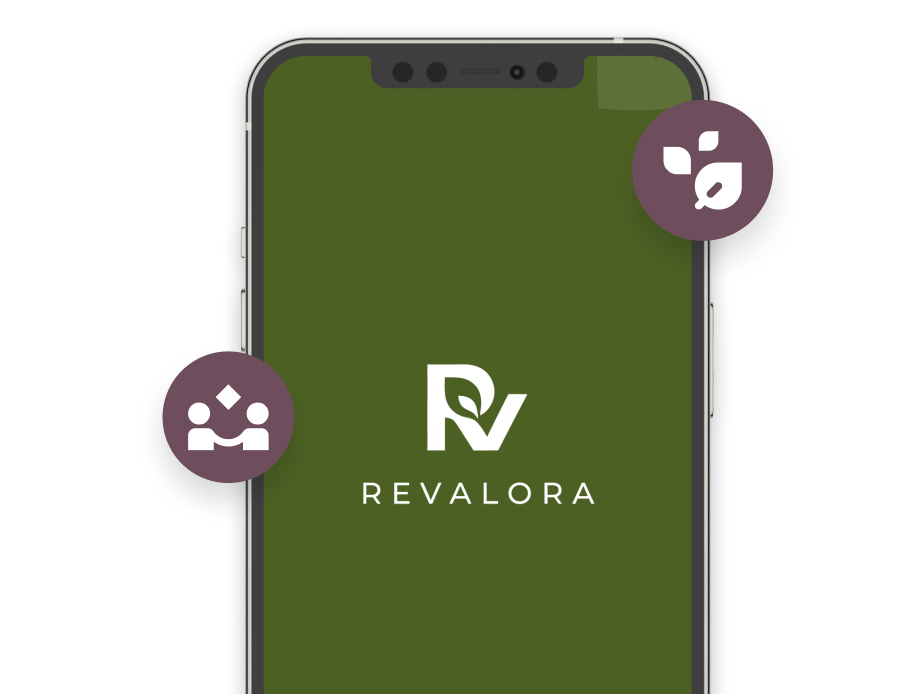
É nesse ponto que a REVALORA atua: conectando pequenos geradores, artesãos e oportunidades de reaproveitamento para fazer o material circular com mais valor.
Quando a conexão acontece, a sobra deixa de ser descarte e vira recurso, renda e possibilidade.
FONTES:
- Movimento Econômico — movimentoeconomico.com.br/artesanato/…fenearte-residuos-ganham-nova-vida-e-viram-itens-de-moda
- Movimento Econômico — movimentoeconomico.com.br/geral/…de-vendedor-a-artesao-brinquedos-de-madeira
- ABREMA — abrema.org.br/panorama
- Prefeitura do Recife — recife.pe.gov.br/…recife-amplia-coleta-seletiva
- Prefeitura do Recife — licenciamentounificado.recife.pe.gov.br/396882026
- Prefeitura do Recife — recife.pe.gov.br/…cidade-pioneira-para-implementar-projeto-internacional
- Prefeitura do Recife — recife.pe.gov.br/…amplia-programa-reciclamais
GRUPO:
Solange Valença
Raysa Andrade
Mônica Farah
Amanda Aquino
Ronaldo Roque
Marcus Barbosa
Emylene Diniz
Miriam Barros
Beatriz Menezes